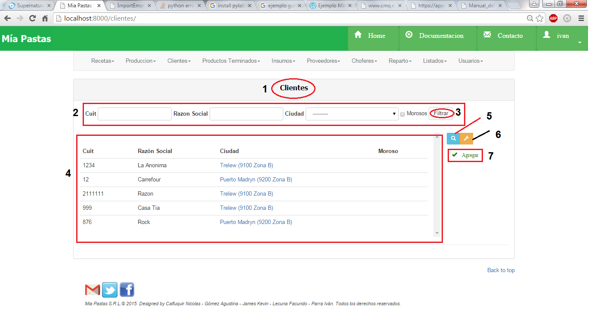

Clientes¶
- Nombre de la sección donde estamos ubicados.
2. Es el sector de filtrado, se podrá filtrar por cuit, razón social, ciudad, morosos. Se filtrará presionando el botón (3). 4. Área de resultado del filtro donde se mostrará cuit, razón social, ciudad y morosidad de los clientes filtrados. De no haberse realizado ningún filtro mostrará todos los clientes existentes. Al hacer click en Ciudad mostrará todos los datos de la ciudad asociada. 5. El icono de lupa sirve para consultar sobre el ítem seleccionado como se muestra en la siguiente figura. De no seleccionar previamente un ítem aparecerá un mensaje de error. 6. El icono de llave sirve para realizar una modificación sobre el ítem seleccionado. Para esto se deberá hacer click previamente sobre el ítem deseado. De no seleccionar previamente un ítem aparecerá un mensaje de error. Mostrará la siguiente pantalla: 7. Dar de Alta un nuevo cliente
Consultar Clientes¶
Seleccionar un cliente haciendo click sobre el deseado y sobre el ícono de lupa.

- Nombre de la sección en la que nos ubicamos, (2) descripción del cliente consultado.
Modificar Cliente¶
Seleccionar con un click el cliente a modificar, luego hacer click sobre el ícono de modificar.
- Nombre de la sección en la que nos ubicamos, (2) descripción del cliente a modificar, (3) y guardar los cambios del cliente.
Alta Cliente¶

- Nombre de la sección en la que nos ubicamos, (2) datos del cliente a crear, (3) dar de alta al nuevo cliente.
Observaciones: • No se podrá dar de alta a un cliente que ya existe. • No se podrá dar de alta a un cliente en donde la ciudad no exista.